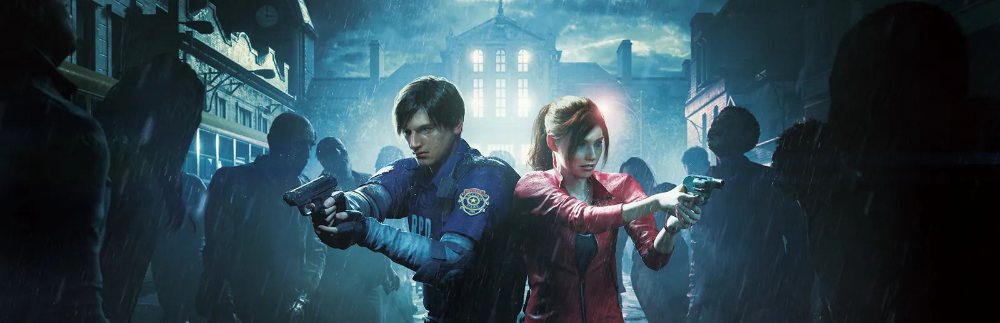
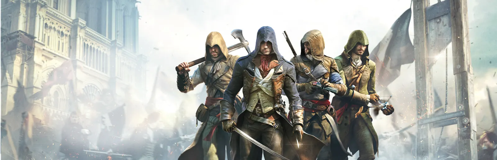
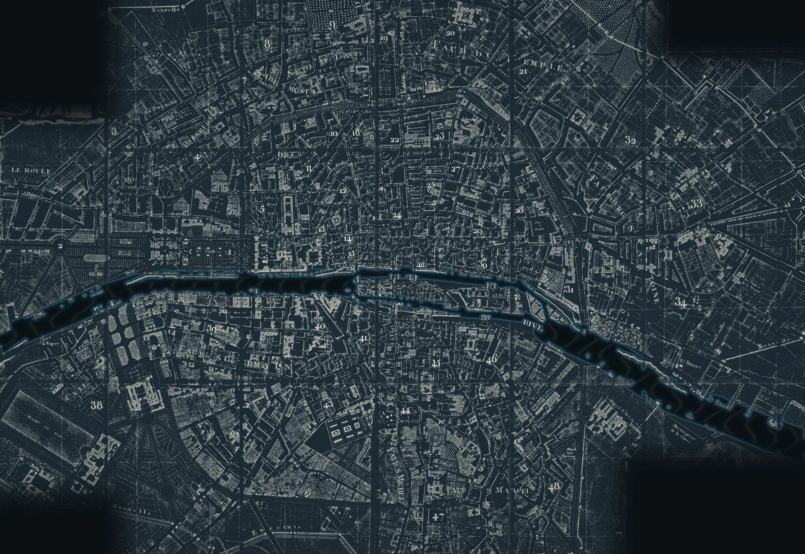

Memoria {{m.id}}{{m.en}}{{m.nth}}
{{m.t}}
{{m.obj}}
Oculto · pulsa para revelarlo
- {{it}}
- {{it}}
Memoria de historia: no tiene objetivos opcionales ni pasos que revelar.
 DisponibleLeague of LegendsTier list y builds
DisponibleLeague of LegendsTier list y builds
 DisponibleARC RaidersObjetos, misiones y mapas
DisponibleARC RaidersObjetos, misiones y mapas
 En construcciónZelda: Tears of the KingdomMapa, semillas y santuarios
NuevoPokémonPokédex, tipos y meta
En construcciónZelda: Tears of the KingdomMapa, semillas y santuarios
NuevoPokémonPokédex, tipos y meta
 PróximamenteARKDinos, mapas y bases
PróximamenteARKDinos, mapas y bases
 NuevoAssassin's CreedLa saga y la guía de Unity
NuevoAssassin's CreedLa saga y la guía de Unity
 NuevoCall of DutyZombis de Black Ops 1 a 4
NuevoCall of DutyZombis de Black Ops 1 a 4

PróximamenteResident EvilMapas, puzles y cajas fuertes PróximamenteRustMonumentos y calculadora de raid
PróximamenteRustMonumentos y calculadora de raid

El París de la Revolución barrio a barrio, la historia de Arno memoria a memoria y todo lo que hay que hacer para completar la ciudad.
El plano real de la ciudad en 1790, con los 22 barrios del juego, sus lugares, dónde pasa cada memoria y las misiones secundarias de cada barrio.
Rueda del ratón: zoom · arrastra para moverte · doble clic para acercar.
Plano de Mondhare et Jean (1790) coloreado por GrietaMeta. Los límites de los barrios son aproximados.

Cada secuencia se abre como una serie de diapositivas. De cada memoria ves el objetivo; los objetivos opcionales, el paso a paso, las oportunidades y el asesinato único quedan ocultos hasta que los pidas.
{{m.obj}}
Memoria de historia: no tiene objetivos opcionales ni pasos que revelar.
Títulos traducidos por GrietaMeta (junto a cada uno, el nombre original en inglés). Detalles de cada memoria contrastados con la guía de Gamer Guides.
Todo lo que hay en París además de la historia, qué te da cada cosa y cómo sacarle partido.
Escala los edificios más altos para revelar la zona en el mapa y termina con un salto de fe.
Repartidos por toda la ciudad. Algunos están cerrados y necesitan ganzúa.
Coleccionables revolucionarios escondidos por los barrios de París.
18 acertijos (6 planetas y 12 signos del zodiaco) que llevan a símbolos ocultos en monumentos de París.
Casos de detective: examina pistas, interroga a testigos y acusa al culpable.
Misiones secundarias con personajes de la época.
Saltos a otras épocas de París para recoger datos antes de que se acabe el tiempo.
Tu base de operaciones. Renuévala junto a los clubes sociales de cada barrio.
Misiones para hasta cuatro jugadores. Los atracos premian que nadie dé la alarma.
Robos, peleas y abusos en plena calle.
DLC gratuito ambientado tras la historia, en Franciade (Saint-Denis), en 1794.
Activa «Misiones secundarias» en el mapa: cada barrio muestra cuántas historias, misterios, enigmas, atracos y misiones de club tiene, y su ficha lista los cofres y las escarapelas.
Ir al mapaAsesinos Templarios Figuras históricas
Hijo de un asesino, criado por la familia De la Serre en Versalles.
Hija de François y amiga de la infancia de Arno.
Padre adoptivo de Arno.
El preso que Arno conoce en la Bastilla.
Líder de la Hermandad de París y gran orador de la Asamblea.
Artesano parisino ligado a la historia templaria. Pieza clave de la trama.
El rostro del Terror.
Un joven militar con el que Arno se cruza.
Escritor libertino que conoce bien los bajos fondos.